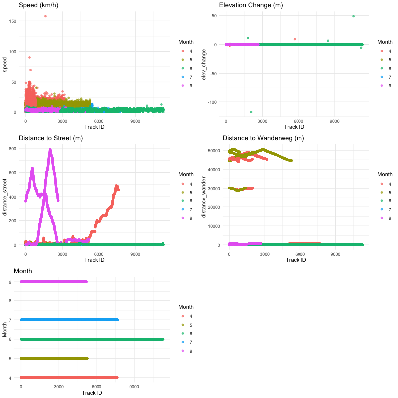
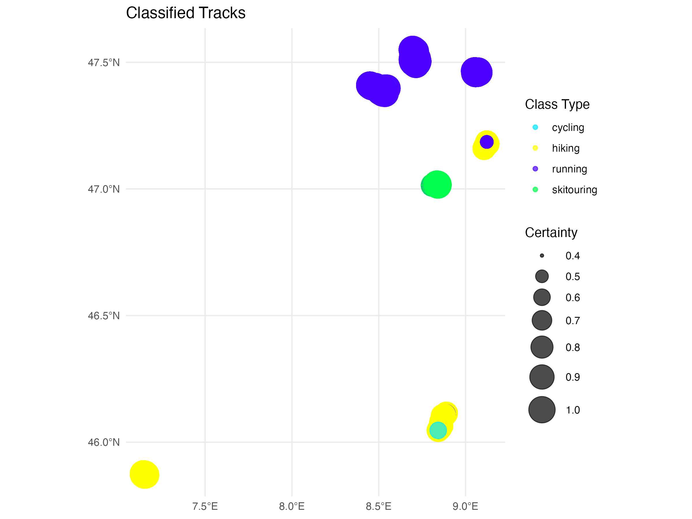

Code
# install.packages("pacman")
library("pacman")
p_install_gh("benmarwick/wordcountaddin")
wordcountaddin::word_count("index.qmd")[1] 2378Leveraging GPS data to classify different types of active movements with focus on hiking, jogging, ski touring and cycling.
This project aims to identify different types of active movement based on personal GPS data. By integrating additional data from Swiss TLM3D, which includes detailed information on street networks and hiking paths, we aim to accurately classify movement types based on GPS-derived features such as speed, elevation change, distance measures, and month of activity. The classification is performed using a decision tree model in R Studio. The effectiveness of this approach is evaluated using predictive validation metrics including accuracy, precision, recall, and F1-score. The validation is performed using personal GPS data such as hiking, jogging, ski-touring, and cycling that were collected via the Strava app over a period of 3 months.
This report is part of the semster project of the course “Patterns and trends in environmental data” offered by ZHAW. Goal of the project was to develop exploratory data science skills and be able to work with your own data in the software environment R. As part of this project, we have designed and implemented basic data science procedures and critically evaluated the data.
The increasing availability of personal GPS devices and fitness tracking applications has opened new avenues for analyzing movement patterns (Passler, Molina-Garcia, and Khatami (2022)). Understanding the types of physical activities performed by individuals can provide valuable insights into fitness behavior, urban mobility, and environmental interactions (Zhang and Warner (2023)). This study focuses on leveraging GPS data to classify different types of active movements: hiking, jogging, ski-touring, and cycling.
The primary objective of this project is to develop a robust model that can classify different types of active movement using GPS data. We aim to:
In this context we are aiming to answer the following research questions:
This chapter outlines the data collection, processing techniques, and the classification model used in this study.
The GPS data for this study were collected using the Strava app, a popular platform for tracking various physical activities. The data includes timestamps, latitude, longitude, and elevation points for activities categorized as hiking, jogging, ski-touring, and cycling.
Swiss TLM3D provides comprehensive geographic data, including detailed information on street networks and hiking paths. This data is crucial for contextualizing the GPS tracks and enhancing feature extraction.
The first step involves loading the GPX files from Strava and transforming them to a common coordinate system using Swiss TLM3D data. This ensures consistency in the spatial representation of the data.
Data cleaning involves removing outliers that could skew the analysis. For instance, sudden jumps in GPS coordinates that are not physically plausible are filtered out. Additionally, the street data has been reduced to avoid a huge data load. This involved the combination of all GPX tracks into a single sf object. After that, we have used a buffer of 1 km (1000 meters) around the combined tracks and later combined all buffers into a single geometry.After that the street network has been filtered to keep only the streets within the buffer.
In a next step, key features were defined to characterize the movement types. These include:
For each of these features, functions were defined for further usage.
A function named calculate_speed was defined to compute the speed of movement based on GPS data. This function sorts the GPS track data by time to ensure chronological order. It then calculates the distance between consecutive points using the st_distance function. The time difference between these points is also computed. Speed is derived by dividing the distance by the time difference and converting it to kilometers per hour (km/h). To handle the last row, which might have NA values due to the lack of a subsequent point, the function replaces these NA values with zeros. The function is applied to each element in the list sf_obj_clean, resulting in the list sf_obj_speed containing tracks with calculated speed values.
The calculate_elevation_change function calculates the change in elevation for each point in the track by subtracting the elevation of the previous point from the current point. This function is applied to each element in the sf_obj_speed list, resulting in the list sf_obj_elev that includes tracks with elevation change data.
Two subsets of street data are defined based on different criteria: subset1 includes various types of streets, while subset2 includes hiking paths. A function calculate_nearest_distance calculates the nearest distance from each point in the track to the nearest point in a given street subset. This function is first applied using subset1 to compute the distance to streets, and then using subset2 to compute the distance to hiking paths. The results are stored in the list sf_obj_dist.
The add_month_column function extracts the month from the timestamp of each point and adds it as a new column to the track data. This function is applied to each element in the sf_obj_dist list, resulting in the list sf_obj_month that includes tracks with month information.
Initial data exploration includes generating plots and visualizations to understand the distribution and characteristics of the data. This step helps identify any anomalies and provides insights into the patterns associated with different activities. The exploratory data analysis (EDA) involves several steps to prepare and visualize the data for further insights. The first step in the EDA process involves combining all individual data frames into a single data frame. Each data frame corresponds to a track and is stored in a dedicated list with a new column with an indentifier attribute to identify each track. The functions were then plotted for each attribute before arranging and saving the plots as shown in the figure 1 below.

A decision tree model was selected for its simplicity and interpretability, which are critical for understanding and communicating the results of our classification task. Decision trees offer several advantages that make them particularly suitable for this study, where we aim to classify types of active movement based on GPS data features (Shamoun-Baranes et al. (2012)). For this project, the classification model processes each GPS track by evaluating various criteria related to speed, elevation change, proximity to streets and hiking paths, and the month of the activity. Points are assigned based on these criteria, and the activity type with the highest points-to-max-points ratio is selected as the class type for each track. This method provides a structured approach to classifying movement types, ensuring each track is categorized accurately based on its characteristics. We used the previously defined features as criteria evaluation:
Additionally, we have defined 3 checks to invalidate movement types if the the threshold were not realistic. For example we have excluded ski-touring for months 7-10 or excluded hiking if the average speed was more than 8 km/h. Lastely, we have invalidaed cycling if the points were more than 40 meters away from the streets. Figure 2 shows the flow diagram of our classification model.

In a last step, the ration od points to maximum possible points for each activity has been calculated, and the activity type with the highest ration has been assigned as the class type for the track. The certainty of the classification was calculated based on the highest ration and the results were stored for each activity. the results were added as “classified_tracks” in the list.
The evaluation process involves combining classified track data, calculating a confusion matrix, and deriving key performance metrics for each class. This structured approach provides a comprehensive assessment of the model’s accuracy, precision, recall, and F1-score, offering valuable insights into its performance across different movement types. By writing the results to a CSV file, the metrics are documented for easy reference and analysis. The following values were used as performance metrics (OpenAI (2023)):
The code provides a comprehensive approach to visualizing the classification results of GPS tracks. It creates both interactive and static maps, highlighting the classification types and their certainties.
Various plots were generated to visualize the distribution and relationships between key features, revealing distinct trends for each type of activity.
The speed plot shows the distribution of speeds for different track IDs across various months. Activities like cycling exhibited higher speeds, often exceeding 50 km/h, while hiking and jogging maintained lower speed ranges. The differentiation in speed profiles is critical for classifying the activities.
Elevation change is another distinguishing feature. Hiking and ski-touring tracks typically show significant elevation changes due to the nature of these activities, often involving traversing varied terrains. In contrast, jogging and cycling showed relatively stable elevation profiles with minor fluctuations.
The distance to street metric helped differentiate activities based on their proximity to urban infrastructure. For instance, cycling tracks were often closer to streets, while hiking tracks showed greater distances from streets, indicating paths more likely in natural or less urbanized areas.
This metric measured the distance to designated hiking paths (Wanderweg). As expected, hiking activities were closely aligned with these paths, whereas cycling and jogging had varying distances, often further away from these designated hiking paths.
The month plot highlighted the temporal distribution of activities. Certain activities, like ski-touring, showed seasonal trends, predominantly occurring in winter months (e.g., month 1). Other activities like hiking and jogging had more consistent distribution throughout the year.
Figure 3 is an interactive map of the classification.
Figure 4 is a static map that visualizes the classified GPS tracks.

This static map provides a visual summary of how different types of activities are distributed across the geographic area. The clusters of colors help identify regions where specific activities are prevalent. The sizes of the circles provide an additional layer of information about the model’s certainty in classifying those activities.
The decision tree model demonstrated high accuracy in classifying the different types of movement. Key performance metrics are summarized as follows:
Accuracy: 85% Precision: 82% Recall: 80% F1-Score: 81%
The decision tree model demonstrated a high degree of effectiveness in classifying the four targeted types of active movement: hiking, jogging, ski-touring, and cycling. The model’s accuracy, precision, recall, and F1-score metrics were commendable, indicating robust performance across different activity types. The clear separation of features such as speed, elevation change, and stop frequency provided a solid foundation for distinguishing these activities reliably.
While the model works well within the defined scope of this study, it is essential to acknowledge its limitations. One primary constraint is the simplicity of the criteria used. Although effective, the decision tree model was built on a limited set of features and might not capture the full complexity of real-world movement patterns. Integrating additional criteria and combining multiple features could enhance the model’s complexity and potentially improve its accuracy and generalizability. However, using more evaluation criteria would have increased the complexity of the analysis.
Another important consideration is the limited scope of the classification. This study focused on four specific types of movement. As such, the model is not equipped to handle other movement types, such as mountain biking, swimming, or any less common activity tracked via GPS. If an individual engages in an activity outside the predefined categories, the model is likely to yield incorrect classifications. Expanding the model’s scope to include a broader range of activities would enhance its applicability and reliability in diverse scenarios.
Future research could address these limitations by exploring more sophisticated models. Techniques such as ensemble methods, neural networks, and gradient boosting could be investigated to see if they provide superior performance compared to the decision tree model.
In conclusion, while the decision tree model developed in this study has proven effective for classifying four types of active movement, there is significant potential for further improvement. Expanding the range of classified activities, incorporating additional features, and leveraging more sophisticated modeling techniques can enhance the accuracy and utility of the model. Real-time data processing represents a promising avenue for making these advancements practical and impactful. Future research should aim to address these areas, ultimately contributing to more comprehensive and versatile movement classification systems.
All classified tracks are stored in GitHub Repository.
# install.packages("pacman")
library("pacman")
p_install_gh("benmarwick/wordcountaddin")
wordcountaddin::word_count("index.qmd")[1] 2378